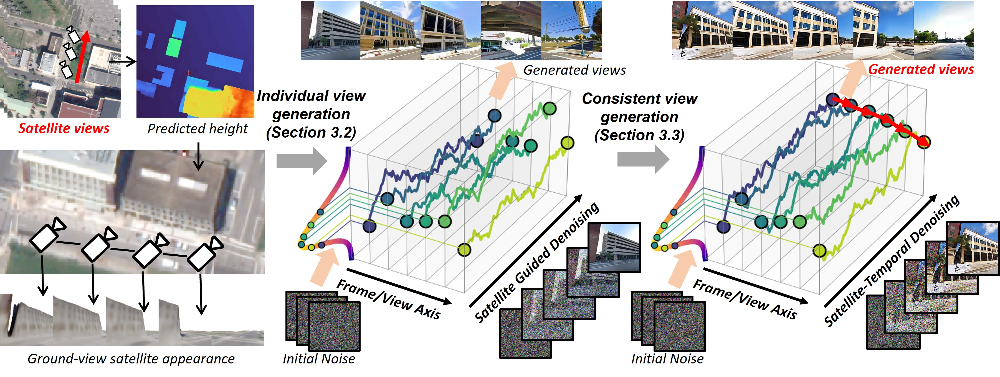
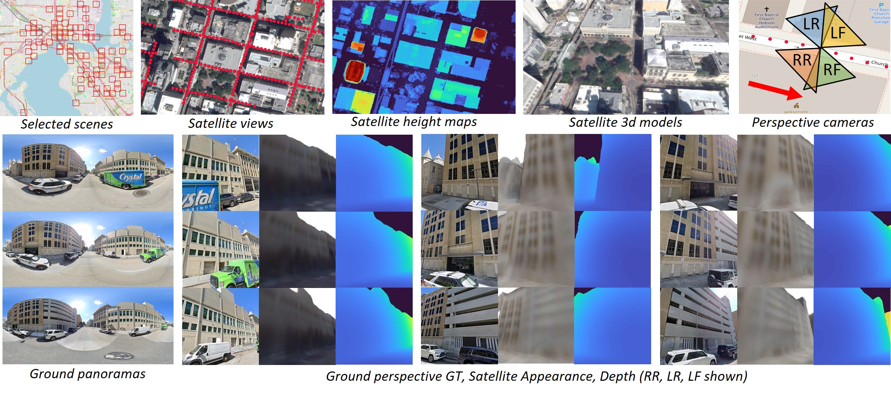
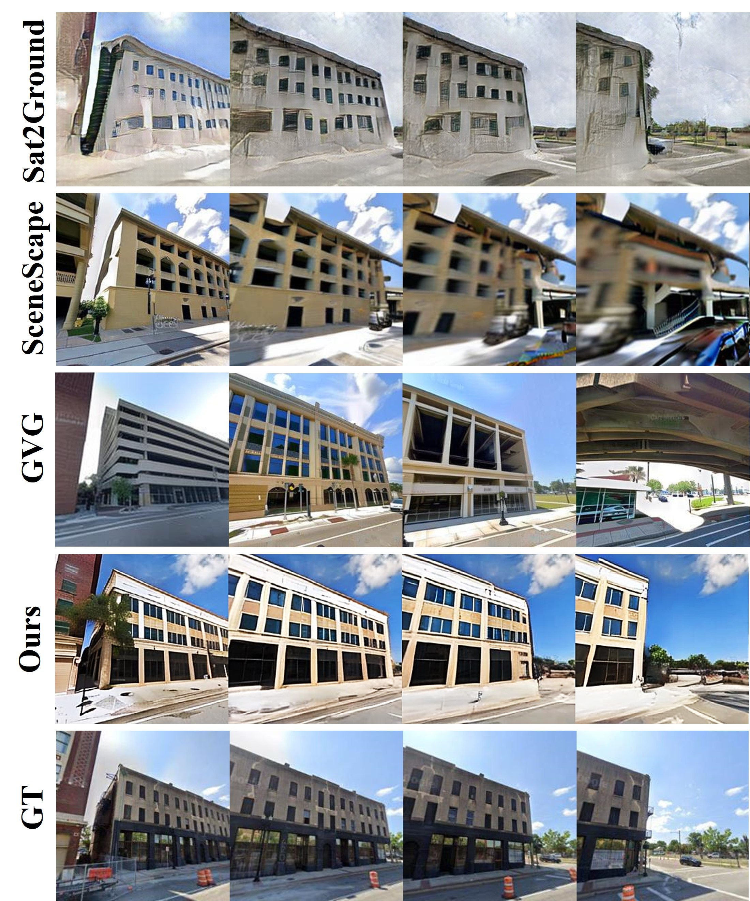
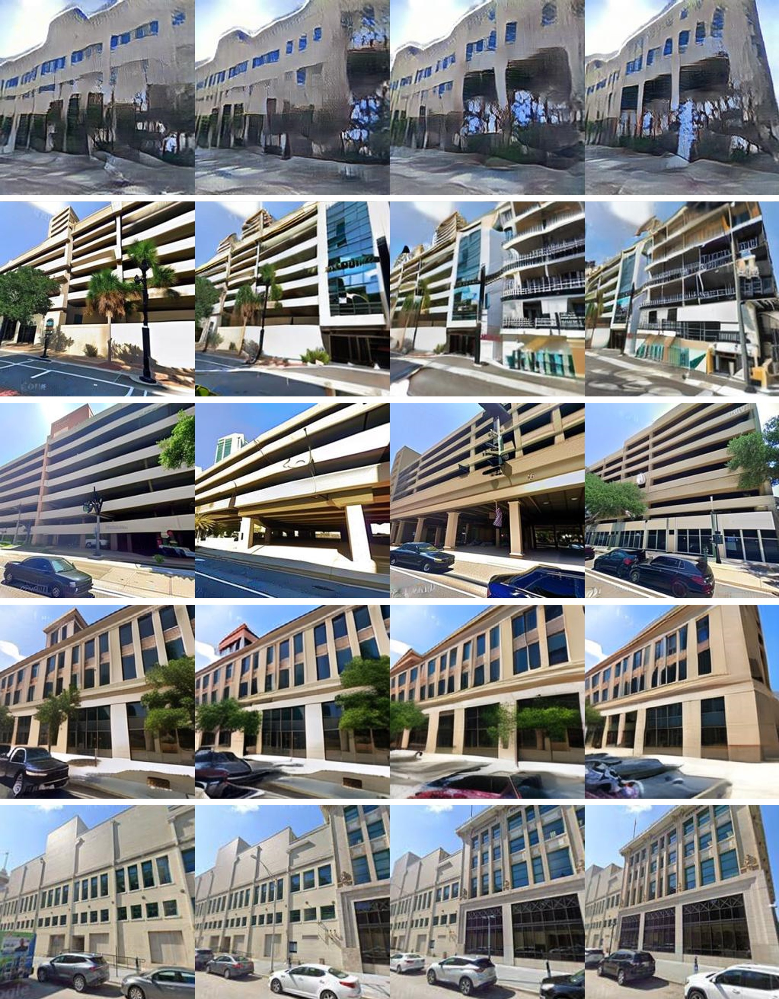
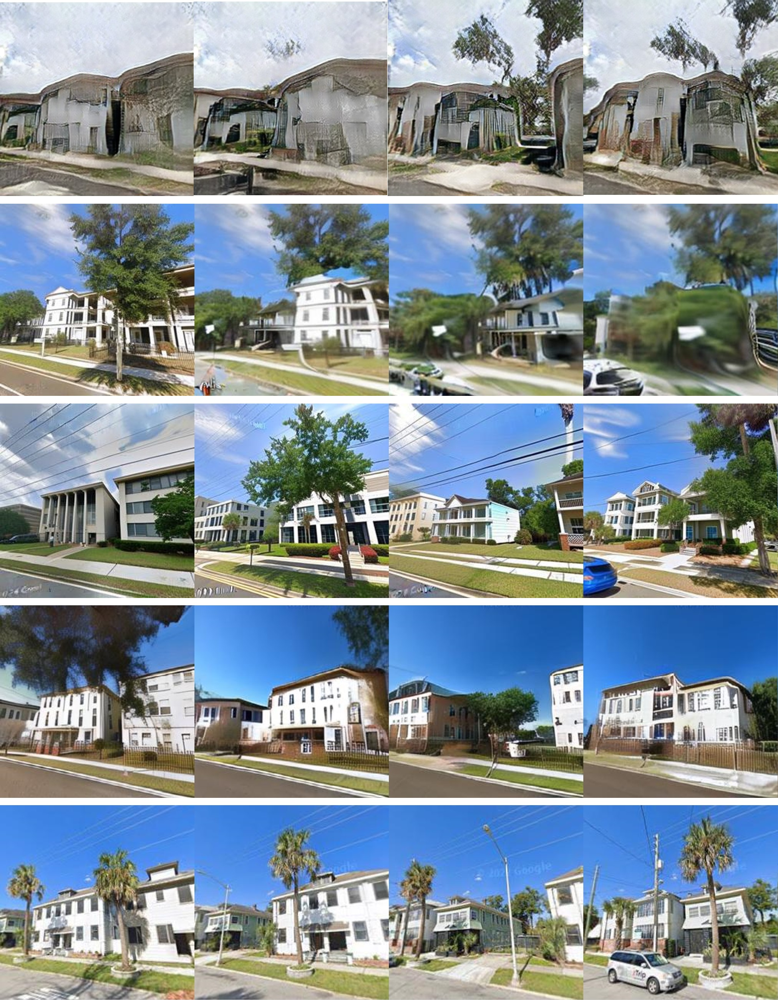
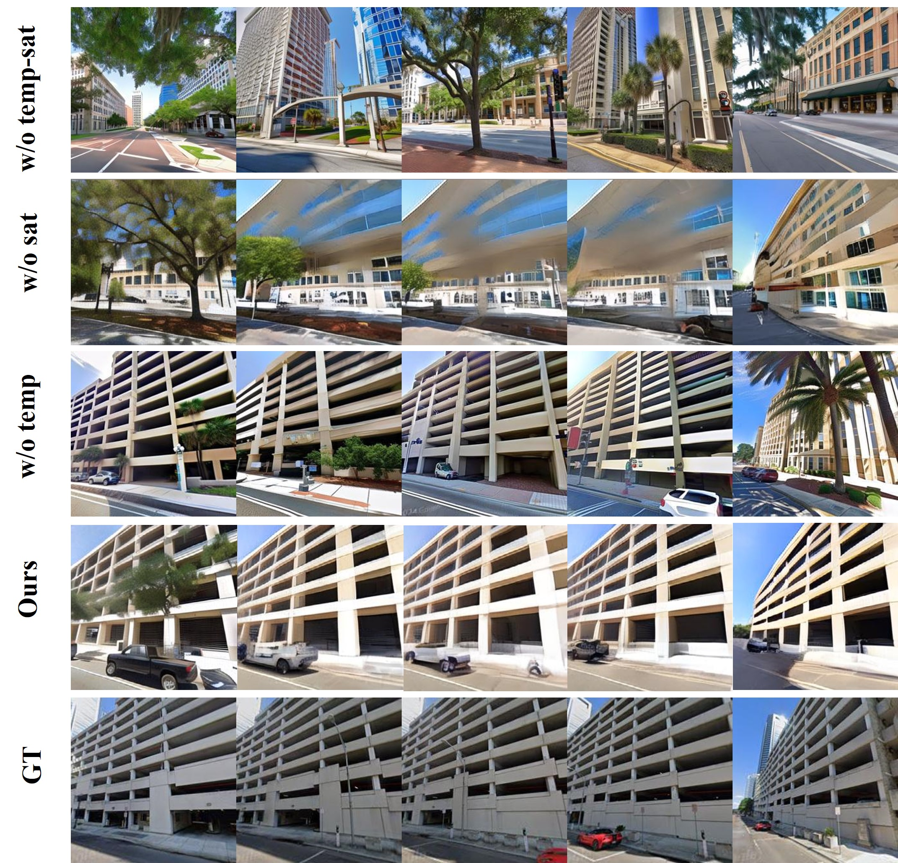

Generating consistent ground-view images from satellite imagery is challenging, primarily due to the large discrepancies in viewing angles and resolution between satellite and ground-level domains. Previous efforts mainly concentrated on single-view generation, often resulting in inconsistencies across neighboring ground views. In this work, we propose a novel cross-view synthesis approach designed to overcome these challenges by ensuring consistency across ground-view images generated from satellite views. Our method, based on a fixed latent diffusion model, introduces two conditioning modules: satellite-guided denoising, which extracts high-level scene layout to guide the denoising process, and satellite-temporal denoising, which captures camera motion to maintain consistency across multiple generated views. We further contribute a large-scale satellite-ground dataset containing over 100,000 perspective pairs to facilitate extensive ground scene or video generation. Experimental results demonstrate that our approach outperforms existing methods on perceptual and temporal metrics, achieving high photorealism and consistency in multi-view outputs.
Overview pipeline of Sat2GroundScape. The satellite appearance is initially projected onto the ground level based on the estimated satellite geometry. Satellite-Guided Denoising is then introduced to guide the latent diffusion model (LDM) in generating individual ground views that preserve the original scene layouts. Satellite-Temporal Denoising is proposed to further ensure consistency across multiple generated views. Input/output are marked as red.

Our dataset provides accurately aligned satellite and ground data, containing appearance, depth, and camera pose information, in both panoramic (over 25,000 pairs) and perspective formats (over 100,000 pairs). Each ground panorama is associated with four perspective views, labeled as "LF, LR, RF, RR" (left forward, left rear, right forward, and right rear). Furthermore, we include a dense ground collection (marked as "red dots") with intervals of 3 to 10 meters between points, supporting large-scale scene and video generation tasks.

Qualitative baseline comparison on the Sat2GroundScape dataset. We present four-view outputs of our method alongside results from Sat2Ground, SceneScape, and GVG. Our method consistently produces more photorealistic results than the baseline approaches. Additional results are provided in the supplementary materials.



In "w/o temp-sat", we show five independently generated ground views without either satellite or temporal conditioning, leading to random and unstructured outputs. In "w/o sat", with a randomly generated initial view, our satellite-temporal denoising process manages to approximate the ground layout in adjacent views, demonstrating some consistency. "w/o temp" illustrates that while the satellite-guided denoising process alone can capture the basic ground layout, it falls short in maintaining visual coherence across neighboring views.
